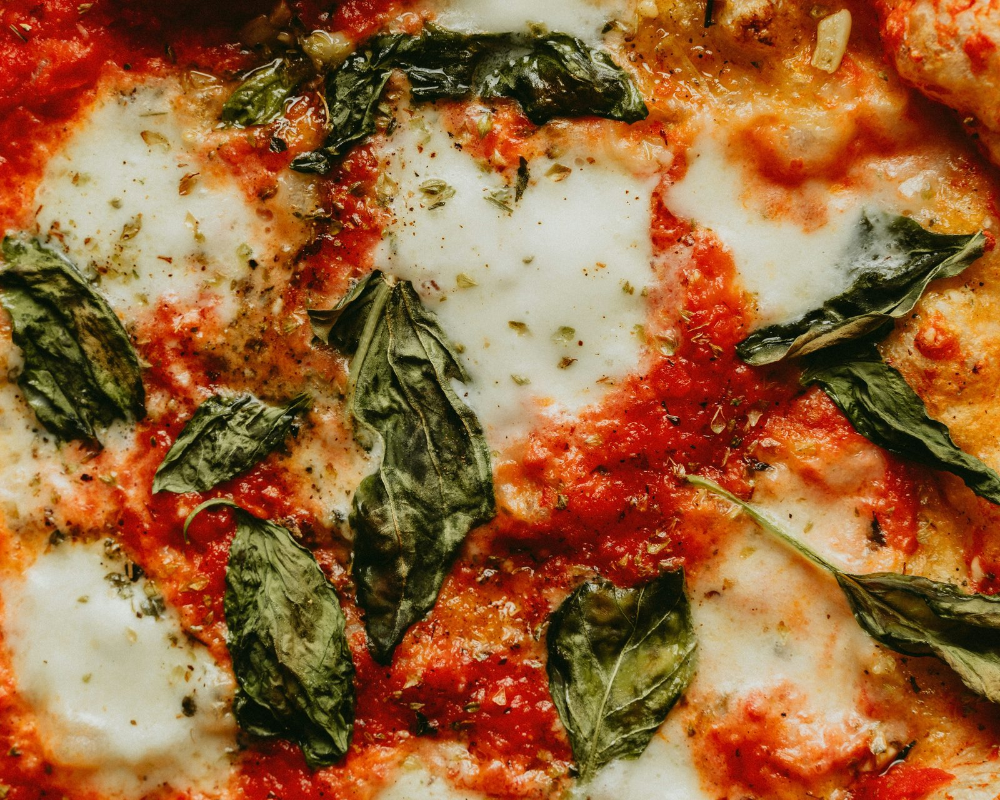
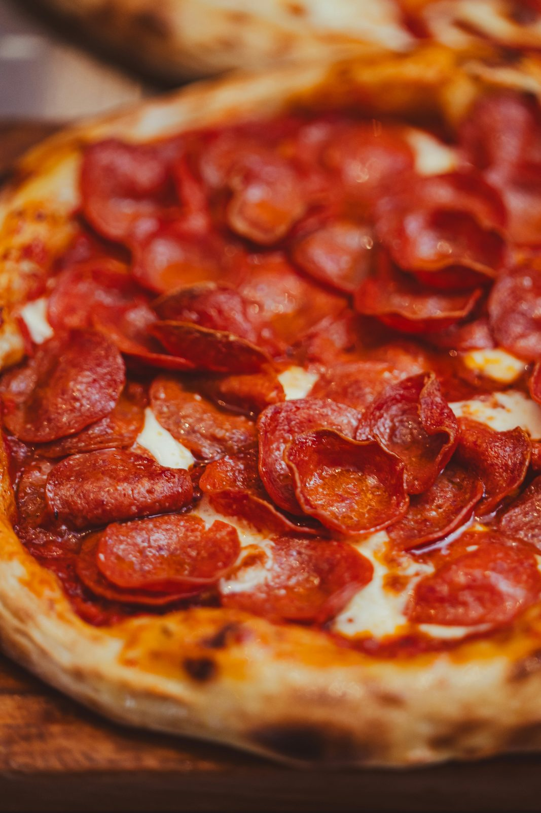

Hitro kosilo
Pica, solata ali testenine, ko si v mestu in želiš nekaj konkretnega brez dolgega čakanja.
Pizzeria / Stari Koper / Od 11:30
Forno Lume je pizzeria za preprost večer: tanko testo, vroča peč, par svežih sestavin in miza, ki se hitro napolni z dobrimi stvarmi.

Pica, solata ali testenine, ko si v mestu in želiš nekaj konkretnega brez dolgega čakanja.
Miza za deljenje: antipasti, več pic, vino, sladica in malo italijanskega hrupa.
Pokliči 20–30 minut prej in pica te počaka ob uri, ki ti ustreza.

Obisk
Miza ni samo za hrano
Namesto prazne galerije smo dodali mini zgodbe: uporabnik dobi občutek, kaj naročiti, kdaj priti in zakaj so določene jedi na meniju.
Mnenja gostov
Gostje največkrat omenjajo rahlo testo, hitro postrežbo, prijeten večerni ambient in pice za deljenje.
“Testo je bilo lahko, rob lepo zapečen, burrata pica pa res najboljša izbira za deljenje.”
Eva K.“Prijeten prostor za večerjo v mestu. Kratek meni, ampak ravno dovolj izbire.”
Marko R.“Hitro naročilo za s seboj, pica še vroča in dobra tudi po poti domov.”
Giulia P.Rezervacije
Za petek, soboto in skupine nad 6 oseb priporočamo rezervacijo. Za naročila za s seboj pokliči 20–30 minut prej.